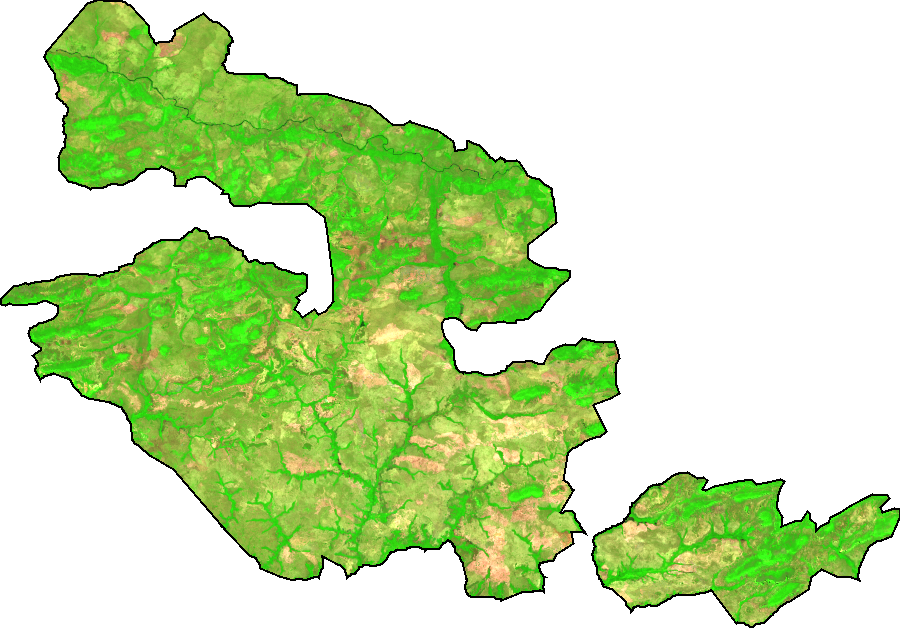
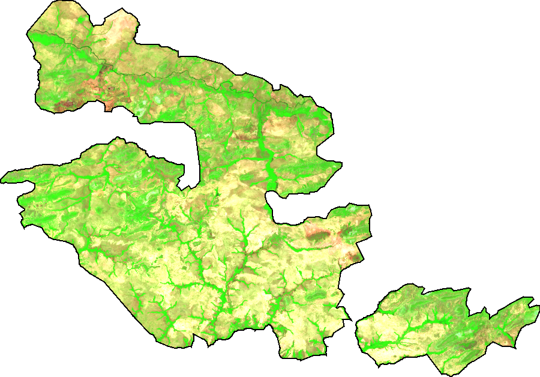
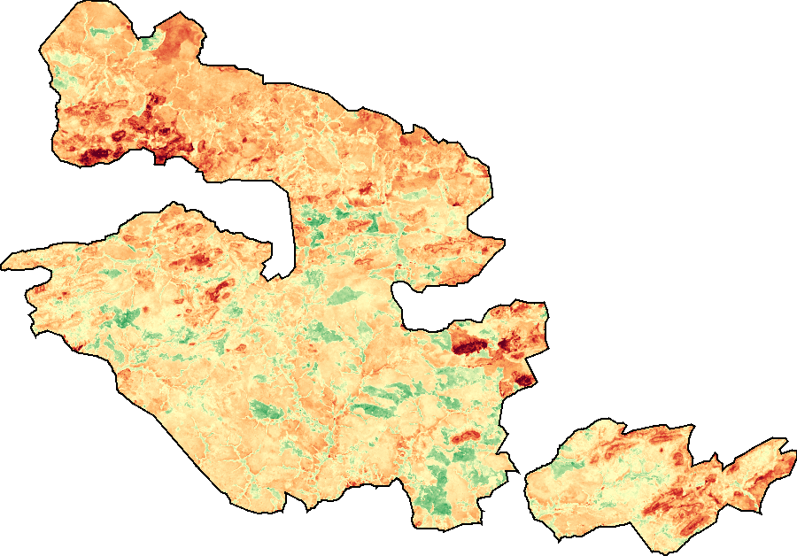
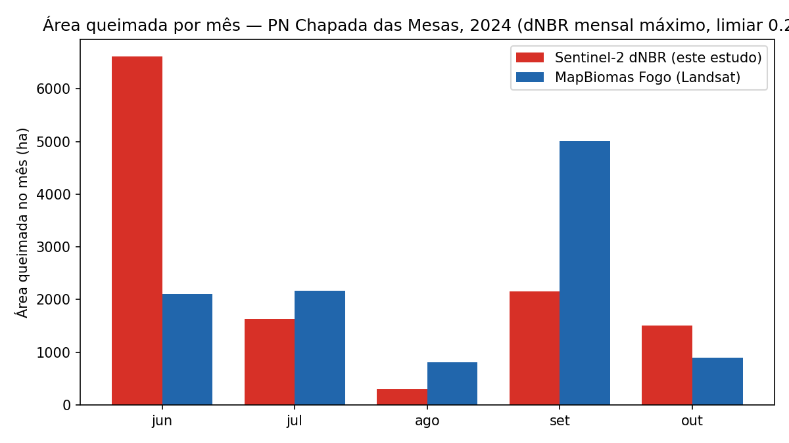
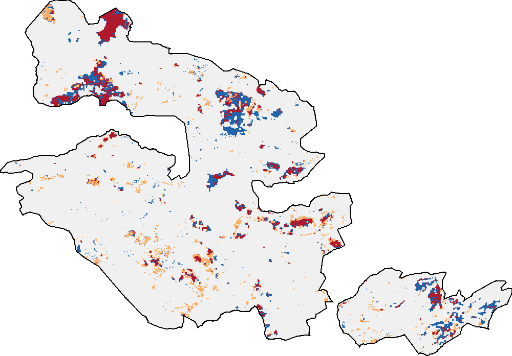
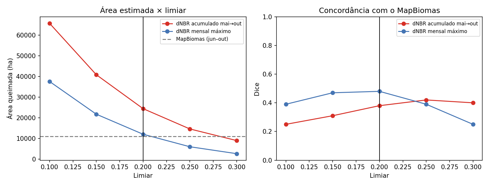
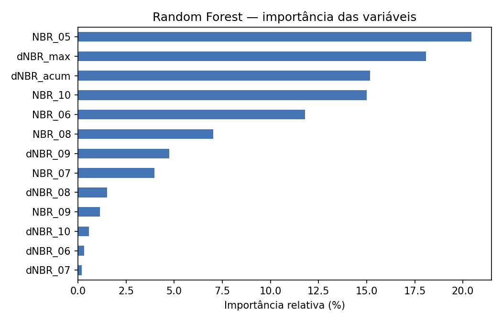
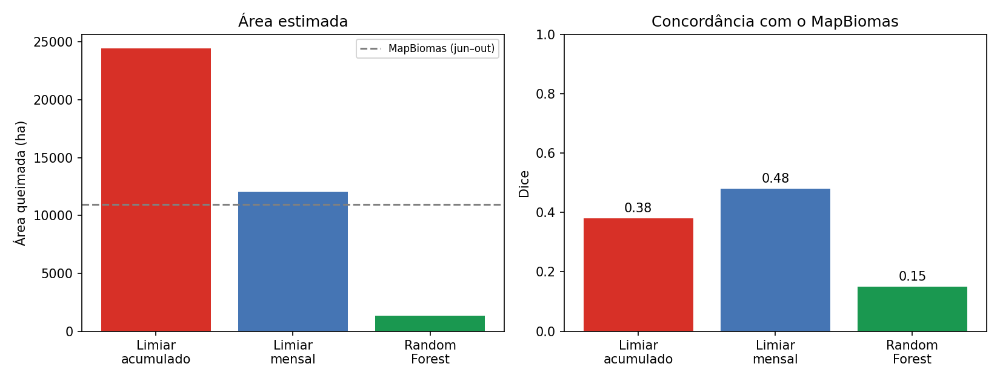

Mapa interativo
Cada polígono é uma área classificada como queimada, colorida pelo mês da queima. Clique num polígono para ver a área e o mês. Use os botões abaixo do mapa para mostrar ou esconder cada mês.
Contexto e relevância
O fogo é recorrente no Cerrado do sul do Maranhão. Em setembro de 2024, um grande incêndio atingiu o Parque Nacional da Chapada das Mesas, unidade de conservação de cerca de 160 mil hectares. O monitoramento mais divulgado usa focos de calor, que mostram onde houve fogo ativo, mas não quanto de área foi queimada nem como essa área se acumula ao longo da estação seca.
Pergunta científica: qual foi a extensão da área queimada no parque durante a estação seca de 2024 e como ela evoluiu mês a mês?
Objetivo: estimar e mapear a área queimada mensal e acumulada entre junho e outubro de 2024, a partir de séries temporais de índices espectrais do Sentinel-2, e avaliar o resultado contra uma referência independente.
ODS 13 — Ação contra a Mudança Global do Clima (relação secundária): o monitoramento da área queimada apoia a resposta a estações secas severas. O projeto não mede emissões.
Contribuição prática: a série mensal mostra em que meses e setores o parque é mais afetado, o que pode subsidiar a gestão da unidade (ICMBio) e as brigadas no planejamento de prevenção e combate. O fluxo é aberto, usa apenas dados gratuitos e pode ser repetido em outros anos e unidades de conservação.
Dados
| Dado | Fonte | Uso |
|---|---|---|
| Sentinel-2 MSI L2A (reflectância de superfície) | Copernicus/ESA, via Google Earth Engine | Composições mensais, NBR, dNBR |
| Cloud Score+ | Google, via Google Earth Engine | Máscara de nuvens e sombras |
| Limite do parque | WDPA (World Database on Protected Areas) | Recorte da área de estudo |
| MapBiomas Fogo, Coleção 5 | MapBiomas | Validação (referência independente) |
Todos os dados de entrada são públicos e gratuitos. Foram usadas 222 cenas Sentinel-2 entre maio e outubro de 2024. Após a máscara de nuvens, 99,6 % do parque tem dado válido em todos os meses. Os polígonos de área queimada produzidos por este estudo estão publicados no repositório (Shapefile e GeoJSON).
Método
- Composições mensais (maio a outubro de 2024): pixels com nota de céu limpo ≥ 0,60 e mediana do mês. Maio é a referência pré-fogo.
- Índices:
NBR = (B8A − B12) / (B8A + B12), em que B8A é o infravermelho próximo (865 nm) e B12 o infravermelho de ondas curtas (2190 nm), ambos com 20 m. A queda de NBR de cada mês édNBR(mês) = NBR(mês anterior) − NBR(mês). - Classificação: pixel queimado se o dNBR mensal máximo (a maior queda entre dois meses seguidos) for maior que 0,20.
- Conectividade: manchas com menos de 3 pixels conectados (< 0,12 ha) são removidas como ruído.
- Mês da queima: o mês com a maior queda de NBR. Cada pixel é contado uma única vez.
- Vetorização em polígonos e validação pixel a pixel contra o MapBiomas Fogo (jun–out/2024).



Resultados: a série mensal
| Mês (2024) | jun | jul | ago | set | out | Total |
|---|---|---|---|---|---|---|
| Este estudo (ha) | 6.612 | 1.637 | 293 | 2.152 | 1.508 | 12.202 |
| MapBiomas Fogo (ha) | 2.102 | 2.170 | 807 | 5.012 | 896 | 10.986 |

A área total ficou a cerca de 11 % da área do MapBiomas, mas em parte porque dois erros sistemáticos se compensam:
- Junho superestimado: de maio para junho começa a secagem da vegetação do Cerrado, que reduz o NBR mesmo sem fogo.
- Setembro subestimado: a composição pela mediana divide entre dois meses uma queimada que ocorre perto da virada do mês, e em cada um a queda fica abaixo do limiar. O grande incêndio de 2024 começou no fim de agosto.
Validação com o MapBiomas Fogo

| Métrica (grade de 30 m) | Valor |
|---|---|
| Precisão (1 − comissão) | 46 % |
| Recall (1 − omissão) | 51 % |
| F1-score (= coeficiente de Dice) | 0,48 |
Os grandes incêndios são detectados pelos dois produtos: noroeste, leste e fragmento sul do parque. Em volta de várias cicatrizes aparece azul: este estudo marca o miolo das cicatrizes, e o MapBiomas as delimita de forma mais larga.
O MapBiomas também é um mapa produzido por modelo (Landsat, 30 m), e não "verdade de campo". Por isso os números indicam concordância com uma referência independente, e não acurácia absoluta.
Comparação de métodos e sensibilidade ao limiar
Dois índices foram testados com o mesmo limiar e a mesma validação: o dNBR acumulado (maio − outubro) e o dNBR mensal máximo. O mensal concordou mais com o MapBiomas em quase todos os limiares, porque detecta a queimada antes da rebrota e sofre menos com a secagem sazonal.
| Limiar | F1: dNBR acumulado | F1: dNBR mensal máximo | Área, mensal (ha) |
|---|---|---|---|
| 0,10 | 0,25 | 0,39 | 37.604 |
| 0,15 | 0,31 | 0,47 | 21.764 |
| 0,20 | 0,38 | 0,48 | 12.065 |
| 0,25 | 0,42 | 0,39 | 6.015 |
| 0,30 | 0,40 | 0,25 | 2.668 |

Teste com aprendizado de máquina: Random Forest
Um Random Forest (100 árvores) foi treinado com pixels das 38 amostras desenhadas por interpretação visual (70 % treino, 30 % teste). No teste interno, ele acertou 100 %. Na validação externa com o MapBiomas, porém, perdeu cerca de 90 % da área queimada.
| Método | Área (ha) | Precisão | Recall | F1 |
|---|---|---|---|---|
| Limiar, dNBR acumulado | 24.444 | 28 % | 62 % | 0,38 |
| Limiar, dNBR mensal máximo | 12.065 | 46 % | 51 % | 0,48 |
| Random Forest, 13 variáveis | 2.018 | 61 % | 11 % | 0,19 |
| Random Forest, 7 variáveis de mudança | 1.332 | 71 % | 9 % | 0,15 |


Limitações e próximos passos
- Estudo de uma unidade de conservação em um ano; validação contra um produto de referência, e não contra dados de campo.
- Comissão em junho, causada pela secagem da vegetação, e divisão de queimadas entre meses pela composição mediana.
- Resultado sensível ao limiar; o projeto mede a extensão da área queimada, não a severidade nem as causas do fogo.
- Áreas que queimam cedo e rebrotam antes da imagem seguinte podem não ser detectadas.
- Próximos passos: agregação temporal de 45 ou 90 dias para captar as áreas que rebrotam; composição mensal pelo NBR mínimo; novo Random Forest com amostras representativas, espalhadas pelo parque e incluindo casos intermediários; repetir a análise para outros anos e unidades de conservação.
Referências
- ALENCAR, A. A. C. et al. Long-term Landsat-based monthly burned area dataset for the Brazilian biomes using deep learning. Remote Sensing, v. 14, n. 11, 2510, 2022. doi:10.3390/rs14112510
- KEY, C. H.; BENSON, N. C. Landscape Assessment (LA). In: LUTES, D. C. et al. FIREMON: Fire Effects Monitoring and Inventory System. USDA Forest Service, RMRS-GTR-164-CD, 2006.
- MAPBIOMAS. MapBiomas Fogo — Coleção 5. brasil.mapbiomas.org/mapbiomas-fogo
- SILVA, F. S.; PESTANA, A. L. M.; MARTINS, L. S. Sensoriamento remoto para detecção de queimadas no Cerrado maranhense: uma aplicação no Parque Estadual do Mirador. Revista Geográfica Acadêmica, v. 13, n. 2, p. 90–105, 2019.
- SILVA JUNIOR, C. H. L. et al. Dinâmica das queimadas no Cerrado do estado do Maranhão, Nordeste do Brasil. Revista do Departamento de Geografia, v. 35, p. 1–14, 2018. doi:10.11606/rdg.v35i0.142407